5.8. Association models
Luna supports two commands (GPA and CPT) that implement efficient
linear model testing, with empirical permutation-based schemes to
handle multiple testing. These commands do not access original EDF or
annotation files at all. Rather, the inputs for these commands are
the outputs from prior Luna commands (or, indeed, from any other
software that output values for the observations, as well as other
covariate data already collected).
In general, GPA is the more general and flexible option, and should
probably be the default if using Luna to perform association
testing (especially if wishing to control for multiple testing across many
different domains of variable).
In contrast, CPT may under some conditions be more powerful, and is more
appropriate when testing only a single metric (e.g. spindle density)
and wishing to account for the multiplicity (and interdependence) of
channels in a hd-EEG context, for example.
GPA overview
Key points to note with respect to the general permutation-based
association command (GPA):
-
fits least squares linear models, allowing for covariates and using the Freedman-Lane approach to handling nuisance variables when permuting data
-
checks for missing data, both row- and column-wise, and optionally performs kNN-based imputation of missing data (otherwise, it imposes casewise deletion)
-
reads and merges multiple files from Luna output (or other sources), supporting long-format files and tracking any strata (e.g. channel, frequency, stage, etc)
-
works in a two-stage manner, first generating a compact binary data matrix (with
--gpa-prep), then performing association tests of some or all of the variables in one or more second steps (with--gpa) -
supports options to summarize, report and subset the data matrix
-
generates adjusted empirical significance values (
PADJ) -
can test multiple dependent and multiple independent variables simultaneously
-
is completely generic, in that it does not assume any particular structure to the variables: in fact, you could use
GPAto analyze any type of data in terms of linear models for quantitative dependent variables
CPT overview
Key points to note with respect to the cluster-based permutation
test command (CPT):
-
assumes input are structured (i.e. repeated) by channel, channel pair, frequency and/or time interval (e.g. spectral power values defined for multiple channels over a range of frequencies)
-
implements a cluster-based approach to testing, that can increase power in some contexts, by pooling results for similar metrics, e.g. nearby channels
-
clusters are defined via simple greedy algorithms along several domains including:
-
spatial distance between two individual channels
-
distance between two frequencies
-
distance between two pairs of channels (for cross-channel metrics, e.g. connectivity)
-
-
designed for a single independent (predictor) variable
-
allows for covariates, using the same Freedman-Lane approach to handling nuisance variables as
GPA -
also generates adjusted empirical significance values for individual variables (similar to
GPA)
Single domain
As an initial, simpler example, we'll run GPA (and then CPT) on a single set of
results: spectral power from the Welch analysis (PSD). These
metrics (which we previously saved in the file
res/spectral.welch.n2.allchs) comprise 4,503 values per individual
(79 frequency bins by 57 channels), although there is naturally a very
high degree of redundancy (i.e. with nearby channels and nearby
frequencies reflecting essentially similar activity).
One can imagine straightforward ways to reduce the number of tests (which is much greater than the N = 20 individuals we have here), to reduce the multiple testing burden but also to potentially to increase power, at least under some circumstances, e.g.:
-
reduce frequency bins to bands (or merge nearby bins, e.g. to give a 1 Hz rather than 0.25 Hz resolution)
-
average power metrics for related channels (e.g. grouping into frontal versus central versus others, etc)
-
apply a dimension-reduction step prior to analysis, for example applying principal components analysis via
PSCas previously described -
restrict testing to a prioritized subset, e.g. based on prior hypotheses
However, here we instead consider a more brute-force approach, in which we don't impose (potentially arbitrary and restrictive) reductions to the data, testing each of the 4,503 metrics separately but accounting for the multiple testing in a way that respects the (massive) inter-dependencies between metrics. This yields adjusted empirical p-values that control the family-wise type I error rate at the desired rate (e.g. 5% if using adjusted P < 0.05). This is achieved by comparing each t-statistic based on the observed data against the maximum statistic (over all tests) under each replicate. The final adjusted empirical p-value is, for a single test, the number of times a we observed a maximum statistic (over all tests) that was greater or equal to the observed statistic.
The CPT approach attempts to take this further, trying to
increase power as well as control false positive rates, by grouping
tests in a data-driven manner, guided by the observed
pattern of associations. (We'll apply CPT as well as GPA here.)
Finally, a further advantage of permutation-based approaches to significance testing is that it will broadly retain expected levels of performance under the null hypothesis, even in the presence of non-normal distributions, outliers and small sample sizes where asymptotic approaches may fail.
Using GPA is a a two-step procedure:
-
first, create a compact binary file describing all the data, with
--gpa-prep -
second, perform association analyses (or request other summaries) with
--gpa
--gpa-prep
Along with the spectral data in res/spectral.welch.n2.allchs,
demographic data are in work/data/aux/master.txt.
There are two ways to specify these inputs (datasets) for GPA:
either on the command-line as a option (inputs), or via a separate
JSON file (spec). For small applications, the former is easier; for
larger applications (and to be able to more flexibly
transform the data), the JSON option is preferred. We'll use
the JSON approach in the primary application of GPA below; in this first application,
we'll use the inputs command-line option.
We'll define two shell variables, purely to make the subsequent command more readable, first
defining the dependent variable (dvs) and independent variable
(ivs) files:
dvs="res/spectral.welch.n2.allchs|psd|CH|F"
ivs="work/data/aux/master.txt|demo"
Note that after the filename, we specify a group label
(here psd or demo -- this can be any user-defined string) followed by any
stratifying factors present, all |-delimited. The group
labels are simple tags that can be used subsequently to select or
exclude groups of variables for analysis. The specification of factors tells GPA how to handle columns in a
file: for the spectral datafile, these factors are CH and F, which
map to the file header:
head res/spectral.welch.n2.allchs
ID CH F stg PSD
F01 Fp1 0.5 N2 24.0111
F01 Fp1 0.75 N2 21.1436
F01 Fp1 1 N2 19.8732
F01 Fp1 1.25 N2 18.4895
F01 Fp1 1.5 N2 17.0952
F01 Fp1 1.75 N2 15.9320
F01 Fp1 2 N2 14.6315
F01 Fp1 2.25 N2 13.7661
F01 Fp1 2.5 N2 13.3606
...
Of note, GPA always requires a first column of ID which
corresponds to the individual ID (i.e. what will be a single row of
the final observation-by-metric dataset).
Further, specifying F and CH as factors here tells GPA to track
them and make separate variables (columns in the final) matrix by each
combination of those factors, as we'll see below. For the demographics
files, no stratifying factors are specified, as there are only 20 rows
(one per individual).
We'll make a working folder for all GPA analysis:
mkdir gpa
We'll now pass this information to --gpa-prep via the inputs
argument (note: inputs can take any number of files, and they do not
need to map to "dependent" and "independent" variables in this manner,
this is just how this particular example is organized):
Note the use of double quotes after echo means that the variables
${dvs} and ${ivs} will be appropriately expanded:
echo " inputs=${dvs},${ivs}
vars=PSD,age,male
dat=gpa/b.n2.spec " | luna --gpa-prep > gpa/manifest.n2.spec
Note that we also pass two other arguments above:
-
varstells Luna which variables to extract; if omitted, then all variables in the file would be extracted (except thatIDand any specified factors would still be handled differently); in this case, it means we ignorestgin the first file (which is a constant string -- allN2-- in this case and so would be ignored/dropped even if loaded) -
datgives the name of the binary file to save the dataset in
The following output is sent to the console log on running the above command:
preparing inputs...
++ res/spectral.welch.n2.allchs: read 20 indivs, 1 base vars --> 4503 expanded vars
++ work/data/aux/master.txt: read 20 indivs, 2 base vars --> 2 expanded vars
checking for too much missing data ('retain-cols' to skip; 'verbose' to list dropped vars)
requiring at least n-req=5 non-missing obs (as a proportion, at least n-prop=0.05 non-missing obs)
no vars dropped based on missing-value requirements
writing binary data (20 obs, 4505 variables) to gpa/b.n2.spec
...done
For the spectral data, we see that Luna found 1 base variable
(i.e. PSD) which was expanded to 4,503 unique variables (given the
CH and F stratifiers) for each person.
After a few checks for fully redundant/empty columns, it saves the
data (a 20 by 4,505 matrix) in gpa/b.n2.spec. This is a binary file:
don't try to open it or use it for anything other than
subsequent --gpa commands.
We also capture the output (sent to the standard output stream) via
the > redirection operator, to a file gpa/manifest.n2.spec. This
manifest file has useful information on each column in the data
matrix:
head gpa/manifest.n2.spec
NV VAR NI GRP BASE CH F
0 ID 20 . ID . .
1 age 20 demo age . .
2 male 20 demo male . .
3 PSD_CH_Fp1_F_0.5 20 psd PSD Fp1 0.5
4 PSD_CH_Fp1_F_0.75 20 psd PSD Fp1 0.75
5 PSD_CH_Fp1_F_1 20 psd PSD Fp1 1
6 PSD_CH_Fp1_F_1.25 20 psd PSD Fp1 1.25
7 PSD_CH_Fp1_F_1.5 20 psd PSD Fp1 1.5
8 PSD_CH_Fp1_F_1.75 20 psd PSD Fp1 1.75
...
Specifically,
-
NVis the column number (one can use this to reference individual variables in the data matrix) -
VARis the expanded variable name, i.e. based on the base variable name (PSD) followed by factor/level pairs, e.gCH_Fp1andF_0.5, all strung together with underscores -
NIis the number of non-missing individuals for that variable -
GRPis the group name we assigned earlier -
BASEis the base variable associated with theVAR -
FandCHexplicitly list the factor levels associated with thatVAR: in this case, these columns areFandCH, if different factors were listed, these final columns would be different; when a factor is not applicable, we enter a.(period)
The BASE, CH and F columns are of course implicit in the VAR
name, but this formatting of the manifest can make it easier to
programmatically work with large datasets (i.e. this manifest can be
merged with the outputs after association testing, by linking on
VAR, and can then be used to help select, or make visualizations,
etc, with test statistics organized by channel or frequency, etc.
--gpa
In the second step, having generated the binary data matrix
gpa/b.n2.spec (and saved an optional manifest) we can now use
--gpa to query these data.
First, we'll review some convenience features: we can request the manifest if needed (sent to standard out):
luna --gpa --options dat=gpa/b.n2.spec manifest
Note, here we're using the form of command where we write options
after --options: this is equivalent to the form used earlier, where
we pipe the options in via standard input, i.e.:
echo "dat=gpa/b.n2.spec manifest" | luna --gpa
We can get a description of the dataset with desc:
luna --gpa --options dat=gpa/b.n2.spec desc
------------------------------------------------------------
Summary for (the selected subset of) gpa/b.n2.spec
# individuals (rows) = 20
# variables (columns) = 4505
------------------------------------------------------------
3 base variable(s):
PSD --> 4503 expanded variable(s)
age --> 1 expanded variable(s)
male --> 1 expanded variable(s)
------------------------------------------------------------
2 variable groups:
demo:
2 base variable(s) ( age male )
2 expanded variable(s)
no stratifying factors
psd:
1 base variable(s) ( PSD )
4503 expanded variable(s)
2 unique factors:
CH -> 57 level(s):
CH = AF3 --> 79 expanded variable(s)
CH = AF4 --> 79 expanded variable(s)
CH = AFZ --> 79 expanded variable(s)
CH = C1 --> 79 expanded variable(s)
CH = C2 --> 79 expanded variable(s)
CH = C3 --> 79 expanded variable(s)
...
F -> 79 level(s):
F = 0.5 --> 57 expanded variable(s)
F = 0.75 --> 57 expanded variable(s)
F = 1 --> 57 expanded variable(s)
F = 1.25 --> 57 expanded variable(s)
F = 1.5 --> 57 expanded variable(s)
F = 1.75 --> 57 expanded variable(s)
...
------------------------------------------------------------
We can dump the entire file as tab-delimited text,
e.g. here to a text file data.txt
luna --gpa --options dat=gpa/b.n2.spec dump > data.txt
We can also request basic statistics (means, standard deviations and
number of non-missing observations) with stats (these are saved to
the standard database output mechanism, not written to the console, so
we need to specify a database here):
luna --gpa -o out.db --options dat=gpa/b.n2.spec stats
destrat out.db +GPA -r VAR | head
ID VAR MEAN NOBS SD
. age 36.35 20 5.51815
. male 0.5 20 0.51298
. PSD_CH_Fp1_F_0.5 25.72812 20 1.99188
. PSD_CH_Fp1_F_0.75 22.30331 20 1.83953
. PSD_CH_Fp1_F_1 20.32433 20 2.03442
. PSD_CH_Fp1_F_1.25 18.74043 20 2.18382
. PSD_CH_Fp1_F_1.5 17.13264 20 2.15516
. PSD_CH_Fp1_F_1.75 15.70914 20 2.05190
. PSD_CH_Fp1_F_2 14.39875 20 1.90914
...
With all these options, as well as with association analysis,
we can select specific variables and/or individuals in several
ways: e.g. by group with grps:
luna --gpa --options dat=gpa/b.n2.spec grps=demo manifest
NV VAR NI GRP BASE
0 ID 20 . ID
1 age 20 demo age
2 male 20 demo male
Or getting PSD means only for the channel FZ :
luna --gpa --options dat=gpa/b.n2.spec faclvls=CH/FZ stats
Or dumping the data for a particular variable (and predictors):
luna --gpa --options dat=gpa/b.n2.spec X=male Z=age lvars=PSD_CH_CZ_F_13.5 dump
ID age male PSD_CH_CZ_F_13.5
F01 41 0 1.0767
F02 32 0 -0.72033
F03 37 0 0.78446
F04 32 0 -1.94636
F05 30 0 -0.30775
F06 32 0 0.48806
F07 33 0 1.26584
F08 40 0 0.26232
F09 44 0 1.16870
F10 34 0 -0.91091
M01 31 1 -0.24160
M02 44 1 -0.69864
M03 33 1 1.08422
M04 41 1 -0.78340
M05 30 1 1.64278
M06 27 1 -0.76731
M07 45 1 -0.71292
M08 40 1 1.03013
M09 40 1 -1.02517
M10 41 1 -0.68891
We'll now turn to actual association analysis, with sex (coded 0/1 for
female/male) as a predictor (X variable) and age as a covariate (Z
variable). Both X and Z can take a multiple variables as a
comma-delimited list; all Z variables will be fit jointly, but X
variables are only entered individually. All variables that have been
otherwise included will automatically be assigned as the dependent
(Y) variables.
Here we request 10,000 permutations of the data:
luna --gpa -o out/gpa-n2-spec.db \
--options dat=gpa/b.n2.spec X=male Z=age nreps=10000
reading binary data from gpa/b.n2.spec
reading 4505 of 4505 vars on 20 indivs
read 20 individuals and 4505 variables from gpa/b.n2.spec
selected 1 X vars & 1 Z vars, implying 4503 Y vars
checking for too much missing data ('retain-cols' to skip; 'verbose' to list dropped vars)
requiring at least n-req=5 non-missing obs (as a proportion, at least n-prop=0.05 non-missing obs)
no vars dropped based on missing-value requirements
running QC (add 'qc=F' to skip) without winsorization (to set, e.g. 'winsor=0.05')
retained all observations following case-wise deletion screen
standardized and winsorized all Y variables
4503 total tests specified
adjusting for multiple tests only within each X variable
performing association tests w/ 10000 permutations... (may take a while)
1702 (prop = 0.37797) significant at nominal p < 0.05
70 (prop = 0.0155452) significant at adjusted p < 0.05
...done
Going through the console log:
-
GPAcorrectly infers 4,053 Y variables, as 2 variables have been specified as either X or Z variables (predictors/covariates) -
there are no missing data in this example, but
GPAperforms some checks in any case -
the QC step a) normalizes all Y variables, and b) optionally winsorizes them (with
winsor=0.02for example) -
it performs 10,000 replicates, each replicate fitting 4,503 linear models; the console notes that this may take a while although in this example, with a small N = 20 dataset, it only takes 8 seconds to load, process and report all output (i.e. fitting over 5 million models per second, thanks to the matrix formulation of the algorithm and the efficient Eigen matrix library Luna uses). This means that even for much larger problems,
GPAwill be able to perform reasonably efficiently (and for the adjusted p-values at least, 10,000 replicates is more than enough). -
we see that 1,702 tests (of 4,503, or 38%) were significant at a nominal P < 0.05, which is obviously much greater than the expected 5% (although acknowledging the correlations between tests make this number harder to interpret)
-
however, 70 tests remain significant after adjustment
Remember that when you run this, you may find slightly more or fewer significnt results, reflecting the random aspect to permutation testing (as well as the fact that some steps involved randomly selecting a subset of epochs, e.g. PSI).
We can review the significant tests in the output database:
destrat out/gpa-n2-spec.db
commands : factors : levels : variables
----------------:-------------:---------------:---------------------------
[GPA] : X Y : 4503 level(s) : B BASE GROUP P PADJ STRAT T
----------------:-------------:---------------:---------------------------
The PADJ is the eighth column in the output, so we can pull the 70
significant results as follows: (showing here just the first four
lines with the header from the full output, and dropping some columns for clarity):
destrat out/gpa-n2-spec.db +GPA -r X Y | awk ' $8 < 0.05 '
X Y B BASE P PADJ STRAT T
male PSD_CH_C3_F_14.75 -1.4748 PSD 0.0007 0.0493 CH=C3;F=14.75 -4.6367
male PSD_CH_CP5_F_14.5 -1.4856 PSD 0.0003 0.0316 CH=CP5;F=14.5 -4.9157
male PSD_CH_CP5_F_14.75 -1.4983 PSD 0.0002 0.0314 CH=CP5;F=14.75 -4.9209
male PSD_CH_CP5_F_15 -1.4784 PSD 0.0004 0.0439 CH=CP5;F=15 -4.7065
...
These top hits are clearly from highly related variables and consequently have very similar results. Their high correlation means that they present less of a multiple testing burden, as the effective number of tests is much smaller than 4,503.
Note that the empirical p-values are based on randomization:
therefore, different runs of the analysis will give slightly different
results, especially when interpreting things in a binary "above" or
"below" some threshold (e.g PADJ < 0.05). Running a higher number
of replicates will lead to more stable estimates, if something is
really "on the border" of significance and you want a "definitive"
answer.
Also note that the P-values are calculated as (R+1)/(N+1) where N
is the number of replicates, and R is the number of times the
null-permuted statistic equaled or exceeded (two-sided) the
observed. The +1 acknowledges that the observed data are also a
possible random permutation, which "equals" itself; we add this to
avoid empirical p-values that are too small (i.e. 0) if not enough
permutations are performed; i.e. if nreps=10 then the smallest
possible empirical p-value would be 1/11 = 0.091, not 0/10 = 0.
Let's load the full set of results into R for visualization:
library(luna)
k <- ldb( "out/gpa-n2-spec.db" )
lx(k)
GPA : X_Y
d <- k$GPA$X_Y
We'll check we have the 70 (or whatever number your permutation run gave) significant results (after correction):
table( d$PADJ < 0.05 )
FALSE TRUE
4433 70
We'll also read in the manifest and merge it, to aid with making
plots: (noting that VAR in the manifest is to be linked with X in
the GPA output, and that we allow the . character to be the missing
code (along with NA) to ensure that F is not cast as a string
variable by R):
m <- read.table("gpa/manifest.n2.spec",
header=T, stringsAsFactors=F, na.strings="." )
d <- merge( d , m , by.x="Y" , by.y = "VAR" )
We'll use ltopo.xy() to plot both the channel- and frequency-specific
results, with the coefficient (B = beta) as the primary Y variable;
we'll also flag which results where significant after adjustment,
using the Z (color) axis:
ltopo.xy( d$CH, x=d$F, y=d$B, z = d$PADJ < 0.05,
pch=20 , col = c(rep("gray",50),rep("red",50)) ,
cex = 0.4 , yline = 0 , ylab = "Beta" ,
mt = "Sex differences in N2 spectral power (+ve: M>F, -ve:M<F)" )
(Note the kludge here: the Z color scale is assumed to be continuous,
with a 100-value palette required; for this binary case, we'll just
make a 100-color palette with 50 of each color, to map to the binary
d$PADJ < 0.05.)
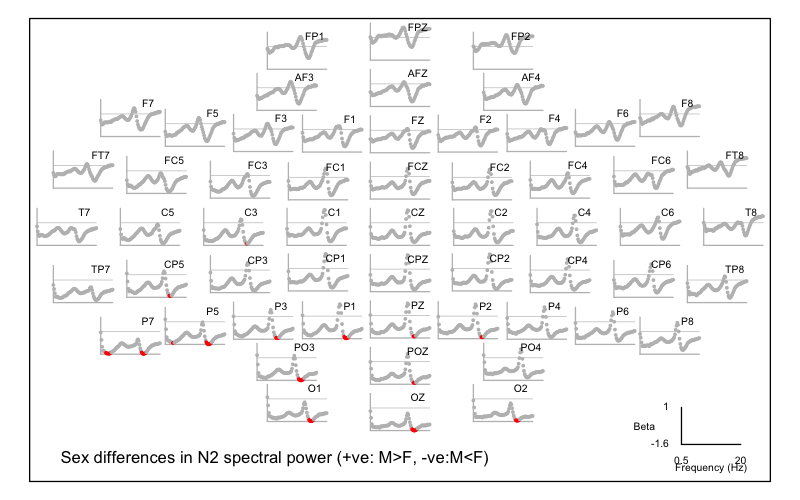
That is, we see two primary areas of significant difference in the frequency domain, with males having lower power during N2 around 3 Hz and also around 15 Hz. We can count the number of significant channels per band (note, removing some rows with zeros to reduce output):
cbind( tapply( d$PADJ , d$F , function(x) { length( x[ x< 0.05 ] ) } ) )
0.5 0
0.75 0
1 0
1.25 0
1.5 0
1.75 0
2 0
2.25 1
2.5 1
2.75 1
3 2
3.25 2
3.5 1
3.75 1
4 0
4.25 0
4.5 0
4.75 0
...
13 0
13.25 0
13.5 0
13.75 0
14 2
14.25 6
14.5 9
14.75 13
15 12
15.25 11
15.5 6
15.75 2
16 0
16.25 0
16.5 0
16.75 0
...
Likewise, we can query which channels were significant:
r <- tapply( d$PADJ , d$CH , function(x) { length( x[ x< 0.05 ] ) } )
r[ r > 0 ]
C3 CP5 O1 O2 OZ P1 P2 P3 P5 P7 PO3 POz PZ
1 3 6 5 7 6 3 4 9 13 7 3 3
For what it's worth, if we repeat the same analysis for REM sleep, we'd find that the sigma sex difference appears to be specific to N2 sleep, whereas the parietal delta difference is not (steps not shown):
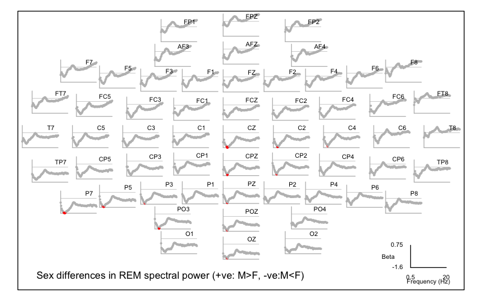
Extracting raw data
Following a significant result, we can extract and view the raw data.
For example, one of the top hits was PSD_CH_P5_F_14.5. We can
extract the raw data along with age and male (naturally we could
also obtain these from the original input files, but sometimes it is
more convenient to do it this way):
luna --gpa --options dat=gpa/b.n2.spec dump X=male Z=age lvars=PSD_CH_P5_F_14.5
ID age male PSD_CH_P5_F_14.5
F01 41 0 1.93855
F02 32 0 0.37221
F03 37 0 1.43436
F04 32 0 -0.18478
F05 30 0 0.34970
F06 32 0 0.61751
F07 33 0 0.35468
F08 40 0 1.01328
F09 44 0 1.02012
F10 34 0 0.59440
M01 31 1 -1.88691
M02 44 1 -1.34835
M03 33 1 -0.31823
M04 41 1 -0.92167
M05 30 1 -0.10552
M06 27 1 -1.24021
M07 45 1 -0.27414
M08 40 1 0.47212
M09 40 1 -0.99162
M10 41 1 -0.89551
Note: specifying male and age via X and Z means they are not
normalized/winsorized (as all dependent variables are). That is,
if we instead write:
luna --gpa --options dat=gpa/b.n2.spec dump lvars=male,age,PSD_CH_P5_F_14.5
it will dump the same variables, but with age and sex also normalized (which isn't intuitive for a binary 0/1 variable):
ID age male PSD_CH_P5_F_14.5
F01 0.842673 -0.974679 1.93855
F02 -0.788307 -0.974679 0.37221
F03 0.117793 -0.974679 1.43436
F04 -0.788307 -0.974679 -0.18478
F05 -1.15075 -0.974679 0.34970
F06 -0.788307 -0.974679 0.61751
F07 -0.607087 -0.974679 0.35468
F08 0.661453 -0.974679 1.01328
F09 1.38633 -0.974679 1.02012
F10 -0.425867 -0.974679 0.59440
M01 -0.969528 0.974679 -1.88691
M02 1.38633 0.974679 -1.34835
M03 -0.607087 0.974679 -0.31823
M04 0.842673 0.974679 -0.92167
M05 -1.15075 0.974679 -0.10552
M06 -1.69441 0.974679 -1.24021
M07 1.56755 0.974679 -0.27414
M08 0.661453 0.974679 0.47212
M09 0.661453 0.974679 -0.99162
M10 0.842673 0.974679 -0.89551
Alternatively, setting qc=F will skip normalization for all variables:
luna --gpa --options dat=gpa/b.n2.spec dump lvars=male,age,PSD_CH_P5_F_14.5 qc=F
ID age male PSD_CH_P5_F_14.5
F01 41 0 8.1431
F02 32 0 2.15151
F03 37 0 6.21447
F04 32 0 0.0208357
F05 30 0 2.0654
F06 32 0 3.08984
F07 33 0 2.08445
F08 40 0 4.6037
F09 44 0 4.62988
F10 34 0 3.00142
M01 31 1 -6.49023
M02 44 1 -4.43007
M03 33 1 -0.489638
M04 41 1 -2.79794
M05 30 1 0.324016
M06 27 1 -4.01642
M07 45 1 -0.320977
M08 40 1 2.53367
M09 40 1 -3.06552
M10 41 1 -2.69789
Here are these data plotted, with the black horizontal line showing the sample mean: this is clearly not driven by an outlier (which we wouldn't expect given the use of permutation despite the small sample); 9 of 10 females are above the mean and 9 of 10 males are below the mean:
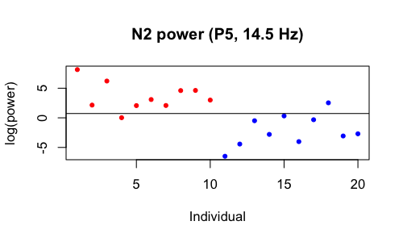
We can also request means and standard deviations with stats but
request these are a) only for significant results and b) stratified by
sex:
To get sex-specific means, one could use the subset options, which
expects male to be a 0/1 variable (so subset=male or
subset=+male means all males; subset=-male is all females).
Alternatively, we can specify a list of IDs via inc-ids or
exc-ids. (These commands can be applied prior to running the
association analyses too, not just for the stats option.) As it is
not convenient to type a long list of IDs on the command line, if we
have them stored in a text file we can use Luna's @{include} syntax
to read them (one entry/ID per row) and make a comma-delimited list
implicitly. In this case, they are in the files male.ids and
females.ids in the aux/ folder.
We can get a list of the 70 expanded significant variables as follows: (i.e. column 3 is the VAR name, column 8 is PADJ):
destrat out/gpa-n2-spec.db +GPA -r X Y | awk ' $8<0.05 { print $3 } ' > hits.txt
head hits.txt
PSD_CH_C3_F_14.75
PSD_CH_CP5_F_14.5
PSD_CH_CP5_F_14.75
PSD_CH_CP5_F_15
PSD_CH_P7_F_2.25
PSD_CH_P7_F_2.5
PSD_CH_P7_F_2.75
PSD_CH_P7_F_3
PSD_CH_P7_F_3.25
PSD_CH_P7_F_3.5
...
wc -l hits.txt
70 hits.txt
We can then pass this to the lvars option using the same @{include} syntax, first for females:
luna --gpa -o females.db \
--options dat=gpa/b.n2.spec stats \
lvars=@{hits.txt} inc-ids=@{work/data/aux/female.ids}
luna --gpa -o males.db \
--options dat=gpa/b.n2.spec stats \
lvars=@{hits.txt} inc-ids=@{work/data/aux/male.ids}
These can be extracted for plotting etc, via destrat males.db +GPA -r
VAR etc: e.g. here are the first few rows from each (some columns
removed, etc )
----- from males.db --- ---- from females.db ---
VAR MEAN NOBS SD MEAN NOBS SD
PSD_CH_C3_F_14.75 -0.958 10 2.257 3.443 10 1.924
PSD_CH_CP5_F_14.5 -2.054 10 2.314 2.433 10 2.332
PSD_CH_CP5_F_14.75 -3.008 10 2.164 1.368 10 2.189
PSD_CH_CP5_F_15 -3.801 10 2.082 0.252 10 1.979
...
--cpt
Next, we'll take the same original (N2) spectral data and apply the
CPT command instead of GPA. Unlike GPA, this is a one-step
procedure, whereby we perform tests directly on the text input file(s):
luna --cpt -o out/cpt-n2-spec.db \
--options dv-file=res/spectral.welch.n2.allchs dv=PSD \
iv-file=work/data/aux/master.txt iv=male covar=age \
th-freq=0.5 th-spatial=0.5 th-cluster=3 \
nreps=10000
Stepping through the options:
-
we point to
res/spectral.welch.n2.allchsas thedv-file(dependent variables) and specify a single class of variable (dv=PSD, i.e. a column in that file) -
unlike
GPA(which is generic),CPTwill explicitly look for stratifying factors it recognizes in the file (i.e.CHandFhere) and apply them, so we don't manually specify them -
we next specify the demographic data in
iv-fileand define a single IV (iv=male) and optionally one or more covariates (covar=age); these correspond toXandZinGPA-- yes, in an ideal world the syntax would be more similar between these two commands, this is something that we'll address in subsequent releases... (perhaps...) -
we then set thresholds that will be used for defining adjacency, here either between channels or between frequency bins; here PSD values will be adjacent if they are adjacent both with respect to spatial and frequency thresholds;
th-freqis in Hz andth-spatialis in distances from the unit-sphere map of channel locations -
we then specify a t-statistic threshold (
th-cluster=3) which controls how clusters are grown: adjacent metrics with test statistics greater than this threshold will be merged in a single cluster, in a greedy, bottom-up manner -
clusters as well as individual metrics are evaluated for association, with the cluster-level statistic being the sum of individual metric statistics; the significance of these sum-statistics is evaluated by permutation (i.e. under each null replicate, clusters are generated based on the same greedy principle)
-
lower
th-clustervalues imply larger clusters (of less strongly associated metrics); the sum-statistics will be larger, but they will also be larger under the null replicates (i.e. by chance alone); the optimalth-clusterwill be data dependent (and some extensions of this basic approach not implemented in Luna allow for the threshold to vary whilst not capitalizing on chance); in practice setting a value or either 2 or 3 is probably sufficient - look at how many clusters are detected in the first round and their sizes
Running this also takes about 8 seconds to do 10,000 replicates and clustering; it gives the following output to the console:
read 20 observations from work/data/aux/master.txt (of total 20 data rows)
reading metrics from res/spectral.welch.n2.allchs
converting input files to a single matrix
found 20 rows (individuals) and 4503 columns (features)
identified 0 of 20 individuals with at least some missing data
finished making regular data matrix on 20 individuals
final datasets contains 4503 DVs on 20 individuals, 1 primary IV(s), and 1 covariate(s)
set 68 channel locations to default values
defining adjacent variables...
of 3192 spatial distances, mean (median) = 1.24291 (1.26729); min/max = 0.30395 / 1.99956
spatial dist. percentiles (1,5,10,20%) = 0.312308 0.391745 0.535039 0.784754
on average, each variable has 25.348 adjacencies
0 variable(s) have no adjacencies
running permutations, assuming a two-sided test...
found 3 clusters, maximum statistic is 1463.54
.......... .......... .......... .......... .......... 50 perms
.......... .......... .......... .......... .......... 100 perms
.......... .......... .......... .......... .......... 150 perms
...
.......... .......... .......... .......... .......... 9900 perms
.......... .......... .......... .......... .......... 9950 perms
.......... .......... .......... .......... .......... 10000 perms
2 clusters significant at corrected empirical P<0.05
all done.
The key lines above are:
-
one starting
final datasets contains...that indicates we have 4,503 DVs on 20 individuals, 1 primary IV(s), and 1 covariate(s) -- it is always important to check that all the expected data have been correctly imported -
the distribution of spatial distances (here 57 * 56 = 3,192 reflecting possible merges in both directions between two channels, although all distances are of course symmetric)
-
that each variable has on average around 25 adjacencies (i.e. which is about 0.5% of all metrics); if this number is too small, then the method will not be able to grow clusters especially if a large proportion have no adjacencies (this is reported on the line below); if the number is too large, then clusters may not have physiological significance. (At the extreme, if all metrics are adjacent to all others, there will be a single cluster which represents a form of omnibus test of all aggregated effects, which may under some circumstances be of interest but it is not the main focus here.)
We can extract the outputs for the significant clusters:
destrat out/cpt-n2-spec.db +CPT -r K
ID K N P SEED
. 1 376 0.0152 P5~14.5~0~PSD
. 2 275 0.0272 P7~3~0~PSD
This shows the two significant (post adjustment for multiple testing)
clusters, with the seed for each cluster (the most significant term)
and the number of members of that cluster (N). That is, we see the same two
regions that were identified (in broad terms) by the prior GPA analysis.
We can load the full table of outputs into R:
library(luna)
k <- ldb( "out/cpt-n2-spec.db" )
d <- k$CPT$VAR
head(d)
ID VAR B CH CLST F PC PU STAT T
1 . AF3~0.5~0~PSD -1.1904908 AF3 0 0.50 0.9999000 0.24117588 -1.2044104 0
2 . AF3~0.75~0~PSD -1.2565732 AF3 0 0.75 0.9963004 0.14168583 -1.5364543 0
3 . AF3~1.25~0~PSD -1.7565233 AF3 0 1.25 0.8940106 0.05169483 -2.1269364 0
4 . AF3~1.5~0~PSD -1.5901487 AF3 0 1.50 0.9386061 0.06609339 -1.9896006 0
5 . AF3~1.75~0~PSD -1.3916724 AF3 0 1.75 0.9693031 0.08659134 -1.8476327 0
6 . AF3~10.25~0~PSD -0.3788045 AF3 0 10.25 1.0000000 0.71682832 -0.3718688 0
...
Looking at this main table:
-
the
VARnames are expanded, similar toGPAbut using a slightly different form: channel, time, frequency and variable separated by the~character; the equivalentCH,FandT(time, which is not used here) strata are also listed as columns (note:Tis not the t-statistic from the tests) -
the coefficient and t-statistic are listed as
BandSTAT -
the uncorrected and corrected P-value are listed as
PUandPC(corresponding toPandPADJforGPA) -
the
PCstatistics here should be similar to thePADJvalues fromGPA: indeed, here if we ask how many are less than 0.05, the answer is 66 which is close to 70 before (note the point above about small fluctuations being expected due to the randomization procedure - if we ran both methods again, we may get some small variations up or down due to chance; using a highernrepswill stabilize outputs) -
perhaps the key variable here is
CLSTwhich is0if that metric was not assigned to any cluster, otherwise1,2, etc to indicate that it belongs to the first, second, etc cluster
We can plot which points belong to significant clusters:
pal = c( rep("lightgray",33), rep("blue",33), rep("green",34) )
ltopo.xy( d$CH , x=d$F, y=d$STAT , z = d$CLST ,
pch=20 , col = pal ,
cex = 0.4 , yline = 0 , ylab = "signed log(P)" ,
mt = "CPT sex differences in N2 spectral power (+ve: M>F, -ve:M<F)" )
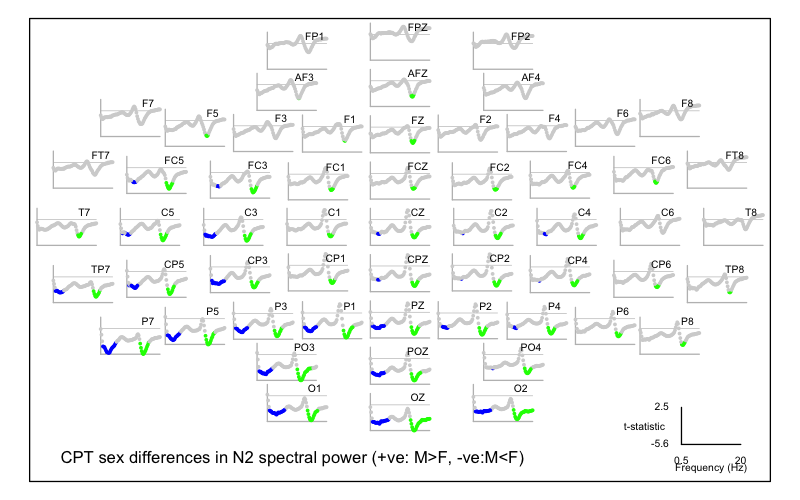
As expected, this shows a qualitatively similar pattern to the GPA
results. Of note, the clusters naturally span a larger number of
points: they will all have in common an unadjusted t-statistic with
an absolute value of 3 or more (i.e. given th-cluster=3), but they will not
all be significant after correction. We can see they are all pointwise
significant with the least significant still having a nominal P < 0.01:
range( d$PU[ d$CLST != 0 ] )
0.00009999 0.00979902
range( d$PC[ d$CLST != 0 ] )
0.01089891 0.45585441
This isn't a problem per se (i.e. there would be no point in running a cluster-based analysis if we always required all constituent members to also be individually significant after correction). However, depending on the cluster definitions it does mean that one cannot necessarily make strong claims about any one result, based on only the fact that it belongs to a significant cluster.
In any case, here we appear to have highly concordant results. For
completeness, we'll also run the REM spectra through CPT (steps not
shown). This yields one significant cluster with 250 members and a
seed at CZ for 2.75 Hz activity:
ID K N P SEED
. 1 250 0.0318 CZ~2.75~0~PSD
The full plot for REM is:
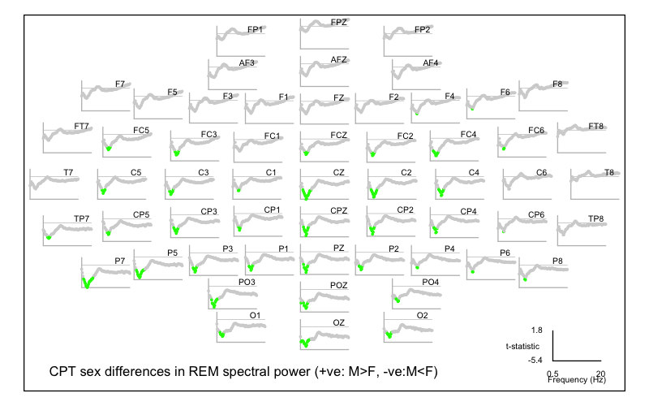
Multiple domains
Having introduced GPA as our primary association (linear model)
tool, we're now in a position (drum roll...) to finally perform the
broad assessment of sex differences across the various domains
considered in this walkthrough so far.
If you followed the earlier steps, your res/ folder should contain
outputs from various classes of analysis:
-
hypnogram-based metrics (
hypno.base,hypno.stageandhypno.cycle) -
spectral metrics (as previously analyzed) for N2 and REM, for the original spectra as well as band-power summaries (
spectral.welch.n2.allchs,spectral.welch.rem.allchs,spectral.welch.band.n2.allchsandspectral.welch.band.rem.allchs) -
metrics quantifying ultradian N2 band-power dynamics (
dynam.cycles,dynam.band.1anddynam.band.2) -
net and pairwise connectivity (PSI) metrics for N2 and REM (
psi1.n2,psi1.rem,psi2.n2andpsi2.rem) -
spindle/SO metrics (
spso.spindles,spso.slowoscandspso.coupl) -
predicted age difference (
pad.base)
These obviously vary tremendously in their scale: whereas pad.base
contains a single metric, psi2.n2 contains 14,364. We'll include
focused analyses of individual domains below, but our initial
analysis will be an agnostic screen across all metrics.
--gpa-prep
In this more involved scenario, rather than use the inputs option
for --gpa-prep it can be preferable to create a JSON
format file that specifies the
files, variables, factors and other features.
If passing a JSON file to --gpa-prep via spec=specs.json, it expects
the following structure:
-
a single object (
{ }) with a named objectinputs, and optionally a second named objectspec -
inputsshould be an array ([ ]) of objects, each describing one file -
each file is an object with fields including
file,group,vars,facsand others -
specscontains general settings and can be ignored for now
An example is simplest: for the case above where the inputs were passed via the command line as:
-
res/spectral.welch.n2.allchs|psd|CH|F -
work/data/aux/master.txt|demo
The equivalent specs.json file would be:
{
"inputs": [
{
"file": "work/data/aux/master.txt",
"group": "demo",
"vars": [ "male", "age" ]
},
{
"file": "spectral.welch.n2.allchs",
"group": "psc",
"vars": "U",
"facs": [ "CH","F" ]
}
]
}
The JSON format is simple but has to be exact: Luna will report any errors in the syntax, or you can use an online JSON validator tool to confirm the syntax. The good news is that you can use a basic template and adjust it, as it likely won't need to change much when reused in different analyses.
For our application, the full specs.json file is in
work/data/aux/specs.json and you can also view it in full
here. (Depending on your browser, it will likely open
this link as a special JSON file, but you should be able to view its
raw data also.)
Creating the binary file
With the datasets described in specs.json, we can now make the binary file and associated manifest:
luna --gpa-prep --options dat=gpa/b.dat \
spec=work/data/aux/specs.json > gpa/manifest
This should give the following output (scan this carefully when running, as it will note if certain files could not be found, etc).
parsing orig/aux/specs.json
reading file specifications ('inputs') for 19 files:
work/data/aux/master.txt ( group = demo ):
expecting 0 factors, extracting 2 var(s)
res/hypno.base ( group = hypno ):
expecting 0 factors, extracting 11 var(s)
res/hypno.stage ( group = hypno ):
expecting 1 factors, extracting 7 var(s)
res/hypno.cycle ( group = hypno ):
expecting 1 factors, extracting 3 var(s)
res/spectral.welch.n2.allchs ( group = spec ):
expecting 3 factors, extracting 1 var(s)
res/spectral.welch.rem.allchs ( group = spec ):
expecting 3 factors, extracting 1 var(s)
res/spectral.welch.band.n2.allchs ( group = spec ):
expecting 3 factors, extracting 1 var(s)
res/spectral.welch.band.rem.allchs ( group = spec ):
expecting 3 factors, extracting 1 var(s)
res/psi1.n2 ( group = psi ):
expecting 2 factors and 1 fixed factors, extracting 1 var(s)
res/psi1.rem ( group = psi ):
expecting 2 factors and 1 fixed factors, extracting 1 var(s)
res/psi2.n2 ( group = psi ):
expecting 3 factors and 1 fixed factors, extracting 1 var(s)
res/psi2.rem ( group = psi ):
expecting 3 factors and 1 fixed factors, extracting 1 var(s)
res/dynam.cycles ( group = dynam ):
expecting 3 factors, extracting 1 var(s)
res/dynam.band.1 ( group = dynam ):
expecting 4 factors, extracting 2 var(s)
res/dynam.band.2 ( group = dynam ):
expecting 5 factors, extracting 1 var(s)
res/spso.spindles ( group = spso ):
expecting 2 factors, extracting 6 var(s)
res/spso.slowosc ( group = spso ):
expecting 1 factors, extracting 8 var(s)
res/spso.coupl ( group = spso ):
expecting 2 factors, extracting 4 var(s)
res/pad.base ( group = pad ):
expecting 0 factors, extracting 1 var(s)
preparing inputs...
++ res/dynam.band.1: read 20 indivs, 2 base vars --> 140 expanded vars
++ res/dynam.band.2: read 20 indivs, 1 base vars --> 500 expanded vars
++ res/dynam.cycles: read 20 indivs, 1 base vars --> 128 expanded vars
++ res/hypno.base: read 20 indivs, 11 base vars --> 11 expanded vars
++ res/hypno.cycle: read 20 indivs, 3 base vars --> 12 expanded vars
++ res/hypno.stage: read 20 indivs, 7 base vars --> 35 expanded vars
++ res/pad.base: read 20 indivs, 1 base vars --> 1 expanded vars
++ res/psi1.n2: read 20 indivs, 1 base vars --> 513 expanded vars
++ res/psi1.rem: read 20 indivs, 1 base vars --> 513 expanded vars
++ res/psi2.n2: read 20 indivs, 1 base vars --> 14364 expanded vars
++ res/psi2.rem: read 20 indivs, 1 base vars --> 14364 expanded vars
++ res/spectral.welch.band.n2.allchs: read 20 indivs, 1 base vars --> 570 expanded vars
++ res/spectral.welch.band.rem.allchs: read 20 indivs, 1 base vars --> 570 expanded vars
++ res/spectral.welch.n2.allchs: read 20 indivs, 1 base vars --> 4503 expanded vars
++ res/spectral.welch.rem.allchs: read 20 indivs, 1 base vars --> 4503 expanded vars
++ res/spso.coupl: read 20 indivs, 4 base vars --> 456 expanded vars
++ res/spso.slowosc: read 20 indivs, 8 base vars --> 456 expanded vars
++ res/spso.spindles: read 20 indivs, 6 base vars --> 684 expanded vars
++ work/data/aux/master.txt: read 20 indivs, 2 base vars --> 2 expanded vars
checking for too much missing data ('retain-cols' to skip; 'verbose' to list dropped vars)
requiring at least n-req=5 non-missing obs (as a proportion, at least n-prop=0.05 non-missing obs)
no vars dropped based on missing-value requirements
writing binary data (20 obs, 42325 variables) to gpa/b.dat
...done
We see that overall we have 42,325 variables across the sample, saved
in a binary file gpa/b.dat along with a manifest in gpa/manifest.
Data descriptions
To obtain a summary of the data:
luna --gpa --options dat=gpa/b.dat desc
------------------------------------------------------------
Summary for (the selected subset of) gpa/b.dat
# individuals (rows) = 16
# variables (columns) = 42323
------------------------------------------------------------
47 base variable(s):
AMP --> 114 expanded variable(s)
BOUT_05 --> 5 expanded variable(s)
BOUT_10 --> 4 expanded variable(s)
BOUT_MD --> 5 expanded variable(s)
BOUT_MX --> 5 expanded variable(s)
BOUT_N --> 5 expanded variable(s)
CDENS --> 114 expanded variable(s)
CHIRP --> 114 expanded variable(s)
COUPL_MAG_Z --> 114 expanded variable(s)
COUPL_OVERLAP_Z --> 114 expanded variable(s)
DENS --> 114 expanded variable(s)
DIFF --> 1 expanded variable(s)
DUR --> 114 expanded variable(s)
FRQ --> 114 expanded variable(s)
MINS --> 5 expanded variable(s)
NOSC --> 114 expanded variable(s)
NREMC_MINS --> 4 expanded variable(s)
NREMC_NREM_MINS --> 4 expanded variable(s)
NREMC_REM_MINS --> 4 expanded variable(s)
PCT --> 4 expanded variable(s)
PSD --> 10274 expanded variable(s)
PSI --> 29754 expanded variable(s)
REM_LAT --> 1 expanded variable(s)
REM_LAT2 --> 1 expanded variable(s)
SE --> 1 expanded variable(s)
SME --> 1 expanded variable(s)
SOL --> 1 expanded variable(s)
SO_AMP_NEG --> 57 expanded variable(s)
SO_AMP_P2P --> 57 expanded variable(s)
SO_AMP_POS --> 57 expanded variable(s)
SO_DUR --> 57 expanded variable(s)
SO_DUR_NEG --> 57 expanded variable(s)
SO_DUR_POS --> 57 expanded variable(s)
SO_RATE --> 57 expanded variable(s)
SO_SLOPE --> 57 expanded variable(s)
SPT --> 1 expanded variable(s)
SS --> 500 expanded variable(s)
TIB --> 1 expanded variable(s)
TST --> 1 expanded variable(s)
TST_PER --> 1 expanded variable(s)
TWT --> 1 expanded variable(s)
U --> 70 expanded variable(s)
U2 --> 70 expanded variable(s)
UDENS --> 114 expanded variable(s)
WASO --> 1 expanded variable(s)
age --> 1 expanded variable(s)
male --> 1 expanded variable(s)
------------------------------------------------------------
7 variable groups:
demo:
2 base variable(s) ( age male )
2 expanded variable(s)
no stratifying factors
dynam:
4 base variable(s) ( PSD SS U U2 )
768 expanded variable(s)
6 unique factors:
B -> 10 level(s):
B = ALPHA --> 80 expanded variable(s)
B = BETA --> 80 expanded variable(s)
B = DELTA --> 80 expanded variable(s)
B = FAST_SIGMA --> 80 expanded variable(s)
B = GAMMA --> 64 expanded variable(s)
B = SIGMA --> 80 expanded variable(s)
...
CH -> 5 level(s):
CH = CPZ --> 640 expanded variable(s)
CH = CZ --> 32 expanded variable(s)
CH = FZ --> 32 expanded variable(s)
CH = OZ --> 32 expanded variable(s)
CH = PZ --> 32 expanded variable(s)
P -> 4 level(s):
P = C1 --> 32 expanded variable(s)
P = C2 --> 32 expanded variable(s)
P = C3 --> 32 expanded variable(s)
P = C4 --> 32 expanded variable(s)
Q -> 10 level(s):
Q = 1 --> 50 expanded variable(s)
Q = 10 --> 50 expanded variable(s)
Q = 2 --> 50 expanded variable(s)
Q = 3 --> 50 expanded variable(s)
Q = 4 --> 50 expanded variable(s)
Q = 5 --> 50 expanded variable(s)
...
QD -> 7 level(s):
QD = BETWEEN --> 20 expanded variable(s)
QD = TOT --> 120 expanded variable(s)
QD = WITHIN --> 20 expanded variable(s)
QD = W_C1 --> 120 expanded variable(s)
QD = W_C2 --> 120 expanded variable(s)
QD = W_C3 --> 120 expanded variable(s)
...
VAR -> 1 level(s):
VAR = PSD --> 640 expanded variable(s)
hypno:
21 base variable(s) ( BOUT_05 BOUT_10 BOUT_MD BOUT_MX BOUT_N MINS ... )
56 expanded variable(s)
2 unique factors:
C -> 4 level(s):
C = 1 --> 3 expanded variable(s)
C = 2 --> 3 expanded variable(s)
C = 3 --> 3 expanded variable(s)
C = 4 --> 3 expanded variable(s)
SS -> 5 level(s):
SS = N1 --> 6 expanded variable(s)
SS = N2 --> 7 expanded variable(s)
SS = N3 --> 7 expanded variable(s)
SS = R --> 7 expanded variable(s)
SS = W --> 6 expanded variable(s)
pad:
1 base variable(s) ( DIFF )
1 expanded variable(s)
no stratifying factors
psi:
1 base variable(s) ( PSI )
29754 expanded variable(s)
5 unique factors:
CH -> 57 level(s):
CH = AF3 --> 18 expanded variable(s)
CH = AF4 --> 18 expanded variable(s)
CH = AFZ --> 18 expanded variable(s)
CH = C1 --> 18 expanded variable(s)
CH = C2 --> 18 expanded variable(s)
CH = C3 --> 18 expanded variable(s)
...
CH1 -> 56 level(s):
CH1 = AF3 --> 1008 expanded variable(s)
CH1 = AF4 --> 990 expanded variable(s)
CH1 = AFZ --> 972 expanded variable(s)
CH1 = C1 --> 954 expanded variable(s)
CH1 = C2 --> 936 expanded variable(s)
CH1 = C3 --> 918 expanded variable(s)
...
CH2 -> 56 level(s):
CH2 = AF4 --> 18 expanded variable(s)
CH2 = AFZ --> 36 expanded variable(s)
CH2 = C1 --> 54 expanded variable(s)
CH2 = C2 --> 72 expanded variable(s)
CH2 = C3 --> 90 expanded variable(s)
CH2 = C4 --> 108 expanded variable(s)
...
F -> 9 level(s):
F = 11 --> 3306 expanded variable(s)
F = 13 --> 3306 expanded variable(s)
F = 15 --> 3306 expanded variable(s)
F = 17 --> 3306 expanded variable(s)
F = 19 --> 3306 expanded variable(s)
F = 3 --> 3306 expanded variable(s)
...
stg -> 2 level(s):
stg = N2 --> 14877 expanded variable(s)
stg = REM --> 14877 expanded variable(s)
spec:
1 base variable(s) ( PSD )
10146 expanded variable(s)
4 unique factors:
B -> 10 level(s):
B = ALPHA --> 114 expanded variable(s)
B = BETA --> 114 expanded variable(s)
B = DELTA --> 114 expanded variable(s)
B = FAST_SIGMA --> 114 expanded variable(s)
B = GAMMA --> 114 expanded variable(s)
B = SIGMA --> 114 expanded variable(s)
...
CH -> 57 level(s):
CH = AF3 --> 178 expanded variable(s)
CH = AF4 --> 178 expanded variable(s)
CH = AFZ --> 178 expanded variable(s)
CH = C1 --> 178 expanded variable(s)
CH = C2 --> 178 expanded variable(s)
CH = C3 --> 178 expanded variable(s)
...
F -> 79 level(s):
F = 0.5 --> 114 expanded variable(s)
F = 0.75 --> 114 expanded variable(s)
F = 1 --> 114 expanded variable(s)
F = 1.25 --> 114 expanded variable(s)
F = 1.5 --> 114 expanded variable(s)
F = 1.75 --> 114 expanded variable(s)
...
stg -> 2 level(s):
stg = N2 --> 5073 expanded variable(s)
stg = R --> 5073 expanded variable(s)
spso:
18 base variable(s) ( AMP CDENS CHIRP COUPL_MAG_Z COUPL_OVERLAP_Z DENS ... )
1596 expanded variable(s)
2 unique factors:
CH -> 57 level(s):
CH = AF3 --> 28 expanded variable(s)
CH = AF4 --> 28 expanded variable(s)
CH = AFZ --> 28 expanded variable(s)
CH = C1 --> 28 expanded variable(s)
CH = C2 --> 28 expanded variable(s)
CH = C3 --> 28 expanded variable(s)
...
F -> 2 level(s):
F = 11 --> 570 expanded variable(s)
F = 15 --> 570 expanded variable(s)
------------------------------------------------------------
kNN missing data imputation
When running --gpa's desc option above, you may have noticed some
information in the console log before the main summary, regarding
missing data and invariance of metrics:
requiring at least n-req=5 non-missing obs (as a proportion, at least n-prop=0.05 non-missing obs)
no vars dropped based on missing-value requirements
running QC (add 'qc=F' to skip) without winsorization (to set, e.g. 'winsor=0.05')
case-wise deletion subsetted X from 20 to 16 indivs (add 'verbose' to list)
dropping BOUT_10_SS_N1 due to invariance
dropping PCT_SS_W due to invariance
reduced data from 42325 to 42323 vars ('retain-rows' to skip)
That is, it has dropped 4 individuals. Re-running adding verbose lets us know who was dropped:
dropping indiv. F05 due to missing values (case-wise deletion)
dropping indiv. F08 due to missing values (case-wise deletion)
dropping indiv. F09 due to missing values (case-wise deletion)
dropping indiv. M06 due to missing values (case-wise deletion)
Looking at the manifest, the third column (NI) gives the number of non-missing individuals; we can select the
variables with fewer than 20 full observations, e.g. in R or using a simple awk command:
awk ' $3 != 20 { print $2 , $3 , $4 } ' OFS="\t" gpa/manifest
VAR NI GRP
PSD_B_SLOW_CH_FZ_P_C3 19 dynam
PSD_B_DELTA_CH_FZ_P_C3 19 dynam
PSD_B_THETA_CH_FZ_P_C3 19 dynam
PSD_B_ALPHA_CH_FZ_P_C3 19 dynam
PSD_B_SIGMA_CH_FZ_P_C3 19 dynam
...
...
...
NREMC_MINS_C_3 19 hypno
NREMC_MINS_C_4 16 hypno
NREMC_NREM_MINS_C_3 19 hypno
NREMC_NREM_MINS_C_4 16 hypno
NREMC_REM_MINS_C_3 19 hypno
NREMC_REM_MINS_C_4 16 hypno
There are 331 variables in total with fewer than 20 non-missing observations (and subset of those shown above). From inspection, it is clear they all relate to variables involving the third and fourth NREM cycles and so they are missing for those individuals who do not have that many NREM cycles defined.
For our small sample we obviously don't want to drop 4 of 20 people (20% of the sample) for this trivial reason. One option is to drop these variables (e.g. restricting the earlier analyses to only the first two cycles), or to analyse the cycle-specific separately in an N=16 analysis (but with all other variables analyzed in a separate N=20 analysis).
As GPA always requires a fully non-missing dataset when fitting linear models,
a further option is to impute the missing values. The GPA module supports a
simple approach to this, based on kNN imputation of missing values. Re-running with knn=3 to
use the three nearest neighbors to do this:
luna --gpa --options dat=gpa/b.dat knn=3 desc
reading binary data from gpa/b.dat
reading 42325 of 42325 vars on 20 indivs
read 20 individuals and 42325 variables from gpa/b.dat
selected 0 X vars & 0 Z vars, implying 42325 Y vars
finished kNN imputation: imputed 795 missing values
all missing values imputed
checking for too much missing data ('retain-cols' to skip; 'verbose' to list dropped vars)
requiring at least n-req=5 non-missing obs (as a proportion, at least n-prop=0.05 non-missing obs)
no vars dropped based on missing-value requirements
running QC (add 'qc=F' to skip) without winsorization (to set, e.g. 'winsor=0.05')
retained all observations following case-wise deletion screen
dropping BOUT_10_SS_N1 due to invariance
dropping PCT_SS_W due to invariance
reduced data from 42325 to 42323 vars ('retain-rows' to skip)
We now see that 795 values have been imputed, and also that all observations have been retained based on missing data.
Note that knn only uses dependent variables, i.e. not any
predictors or covariates that are specified via X and Z, as we'll
do below in the association analyses.
In practice, if using kNN imputation one might want to look at the
imputed values (i.e. which can be done with dump as well as knn).
Naturally, depending on the nature of the missing data (i.e. is it
missing at random, etc), the performance of this approach may vary. If
all significant results are coming from metrics with a high proportion
of imputed data, for example, one might want to explore the data some
more. But for the purposes of this didactic walkthrough, we'll
assume that the imputation was sufficient.
Having fixed the missing data issue, we still see that two variables (columns) were dropped due to invariance
dropping BOUT_10_SS_N1 due to invariance
dropping PCT_SS_W due to invariance
This means these two variables had no variation in this sample -
i.e. nobody had an contiguous N1 bout longer than 10 minutes (which is
not surprising); also the PCT stage durations are only defined for
sleep (not wake) stages, as it is expressed as a proportion of total
sleep time. Thus the final dataset is reduced from 42,325 to 42,323
variables.
--gpa
Finally... we can now fit the association models over all variables. As before,
-
the predictor is
male -
we'll covary for
age -
we'll request 10,000 permutations
-
we'll include the
knn=3imputation step to ensure an N = 20 analysis
luna --gpa -o out/gpa-full.db \
--options dat=gpa/b.dat knn=3 X=male Z=age nreps=10000
male and age specified as predictors/covariates, GPA knows to exclude them from
the list of dependent variables, i.e. from the console log:
read 20 individuals and 42325 variables from gpa/b.dat
selected 1 X vars & 1 Z vars, implying 42323 Y vars
Running on a standard laptop, this analysis took a little longer but only about 1 minute 30 seconds. This suggests that even with larger sample sizes, permutation-based approaches with many variables should still be feasible.
Did we find anything?
From the console log, we see 6470 (15%) of metrics are significant at the nominal P < 0.05 rate, which is clearly more than expected; we also see 8 variables that are significant after adjustment for multiple testing:
6470 (prop = 0.152879) significant at nominal p < 0.05
8 (prop = 0.000189031) significant at adjusted p < 0.05
What are these?
destrat out/gpa-full.db +GPA -r X Y -p 3 | awk ' NR == 1 || $8 < 0.05 '
Y B BASE GROUP P PADJ STRAT T
PSI_stg_N2_CH1_F3_CH2_Fp2_F_13 -1.689 PSI psi 0.0001 0.040 CH1=F3;CH2=Fp2;F=13;stg=N2 -6.828
PSI_stg_N2_CH1_F5_CH2_FPZ_F_13 -1.693 PSI psi 0.0001 0.035 CH1=F5;CH2=FPZ;F=13;stg=N2 -6.903
PSI_stg_N2_CH1_F5_CH2_Fp2_F_13 -1.723 PSI psi 0.0001 0.018 CH1=F5;CH2=Fp2;F=13;stg=N2 -7.383
PSI_stg_N2_CH1_F7_CH2_FPZ_F_13 -1.733 PSI psi 0.0001 0.012 CH1=F7;CH2=FPZ;F=13;stg=N2 -7.617
PSI_stg_N2_CH1_FC3_CH2_Fp2_F_13 -1.700 PSI psi 0.0001 0.029 CH1=FC3;CH2=Fp2;F=13;stg=N2 -7.012
PSI_stg_N2_CH1_FC5_CH2_Fp2_F_13 -1.744 PSI psi 0.0001 0.010 CH1=FC5;CH2=Fp2;F=13;stg=N2 -7.792
PSI_stg_N2_CH1_FPZ_CH2_FT7_F_13 1.682 PSI psi 0.0001 0.046 CH1=FPZ;CH2=FT7;F=13;stg=N2 6.720
PSI_stg_N2_CH1_FT7_CH2_Fp2_F_13 -1.736 PSI psi 0.0001 0.012 CH1=FT7;CH2=Fp2;F=13;stg=N2 -7.611
That is, the one class of association that survives correction for multiple testing (in this N=20 sample) is for N2 connectivity from the PSI, specifically implicating differences in sigma-band (i.e. F=13 Hz implies a window of 11 - 15 Hz given our prior parameterization) activity at frontopolar electrodes. We've previously tested and characterized sex differences in PSI, finding this effect (that appears to be generalized over multiple frontal channels), reflecting greater sensor-level nonzero-lag directed connectivity in females. What we've added here is a more robust statistical assessment of this effect, both in terms of distributional issues that may arise in the small sample, but more importantly in terms of multiple testing (here for over 40,000 variables tested).
We probably don't want to bet the farm on this result just yet, however... Whether this reflects true (neural) physiological differences or not (e.g. versus the differential impact of muscle contamination, head size, or other factors, etc) is beyond the scope of this walkthrough. Naturally, this result could also still be a false positive (i.e. there is a 5% probability). In fact, the very low sample size implies likely low power, which not only the probability of missing genuine associations but also the probability that significant associations represent false-positive findings (e.g. PMID 24739678).
Although the broad patterns will tend to hold, the random selection of epochs for PSI can also influence whether or not results are just above or just below the very stringent thresholds applied here. That is, we've found that in re-running the PSI step (which gives the bulk of the metrics) will pick a different set of epochs each time - sometimes we find more than 7 "experiment-wide significant hits", but sometimes we find fewer, or none.
Of course, we're hitting these issues because we've unleashed a fairly
massive barrage of tests on an under-powered sample: the methods in
GPA can't rescue a fundamentally flawed study design, after all.
Whilst there may be some signal here (as the earlier Q-Q plot
suggested...), the likelihood at these specific results holding up to
replication might not be high, as one might intuitively guess. In any case,
we'll explore the correspondence between this and the independent N=106
dataset in a subsequent (future) section.
Secondary analyses
We will not explore the results in great detail here, particularly as we've previously covered some of this in previous sections, and there is not experiment-wide support for these other metrics in this sample. Nonetheless, we'll touch on a couple of domains here:
First, we'll extract the full table of results:
destrat out/gpa-full.db +GPA -r X Y > results.txt
In R, we'll merge the manifest information in too:
d <- read.table("results.txt", header=T, stringsAsFactors=F)
m <- read.table("gpa/manifest", header=T, stringsAsFactors=F, na.strings = ".")
Note that the manifest contains extra columns for the additional factors (e.g. CH1, CH2, etc);
also note that as VAR was a factor but also an existing column in the manifest, R has sensibly disambiguated
things by renaming it VAR.1:
str(m)
'data.frame': 42326 obs. of 17 variables:
$ NV : int 0 1 2 3 4 5 6 7 8 9 ...
$ VAR : chr "ID" "age" "male" "PSD_B_SLOW_CH_FZ_P_C1" ...
$ NI : int 20 20 20 20 20 20 20 20 20 20 ...
$ GRP : chr NA "demo" "demo" "dynam" ...
$ BASE : chr "ID" "age" "male" "PSD" ...
$ B : chr NA NA NA "SLOW" ...
$ C : int NA NA NA NA NA NA NA NA NA NA ...
$ CH : chr NA NA NA "FZ" ...
$ CH1 : chr NA NA NA NA ...
$ CH2 : chr NA NA NA NA ...
$ F : num NA NA NA NA NA NA NA NA NA NA ...
$ P : chr NA NA NA "C1" ...
$ Q : int NA NA NA NA NA NA NA NA NA NA ...
$ QD : chr NA NA NA NA ...
$ SS : chr NA NA NA NA ...
$ VAR.1: chr NA NA NA NA ...
$ stg : chr NA NA NA NA ...
We'll merge the two files, but first make some changes to clean things
up (it would be fine to not make these changes, it just means the
variable names in the merged dataset would be more awkward, i.e. with
.x and .y suffixes added):
-
BASEfeatures in both files, so we'll drop it from the manifest -
inconveniently, we chose the factor label
Pfor period in the ultradian analyses, which will clash withPmeaning p-value ind; we'll therefore rename it toPERinmbefore merging -
likewise,
Bmeans beta indbut is also used to mean band in the manifest, so we'll also rename that
m$BASE <- NULL
names(m)[ which( names(m) == "P" ) ] <- "PER"
names(m)[ which( names(m) == "B" ) ] <- "BAND"
d <- merge( d , m , by.x = "Y" , by.y = "VAR" )
We now have a single data frame that can be used to explore the results further:
head(d)
> head(d)
Y ID X B BASE GROUP P PADJ
1 AMP_CH_AF3_F_11 . male -0.08385773 AMP spso 0.84241576 1.0000000
2 AMP_CH_AF3_F_15 . male -0.97120562 AMP spso 0.02159784 0.9990001
3 AMP_CH_AF4_F_11 . male -0.27150677 AMP spso 0.52884712 1.0000000
4 AMP_CH_AF4_F_15 . male -1.02086436 AMP spso 0.01659834 0.9988001
5 AMP_CH_AFZ_F_11 . male -0.30076235 AMP spso 0.48975102 1.0000000
6 AMP_CH_AFZ_F_15 . male -1.13890798 AMP spso 0.00609939 0.9959004
STRAT T NV NI GRP BAND C CH CH1 CH2 F PER Q QD
1 CH=AF3;F=11 -0.1973348 40734 20 spso <NA> NA AF3 <NA> <NA> 11 <NA> NA <NA>
2 CH=AF3;F=15 -2.5989952 40735 20 spso <NA> NA AF3 <NA> <NA> 15 <NA> NA <NA>
3 CH=AF4;F=11 -0.6321590 40736 20 spso <NA> NA AF4 <NA> <NA> 11 <NA> NA <NA>
4 CH=AF4;F=15 -2.7098350 40737 20 spso <NA> NA AF4 <NA> <NA> 15 <NA> NA <NA>
5 CH=AFZ;F=11 -0.7030520 40826 20 spso <NA> NA AFZ <NA> <NA> 11 <NA> NA <NA>
6 CH=AFZ;F=15 -3.1947804 40827 20 spso <NA> NA AFZ <NA> <NA> 15 <NA> NA <NA>
SS VAR.1 stg
1 <NA> <NA> <NA>
2 <NA> <NA> <NA>
3 <NA> <NA> <NA>
4 <NA> <NA> <NA>
5 <NA> <NA> <NA>
6 <NA> <NA> <NA>
We'll start by asking how many nominally significant hits each domain had (as a proportion and an absolute amount, given the large differences in size of domains):
cbind( tapply( d$P < 0.05 , d$GRP , mean ) ,
tapply( d$P < 0.05 , d$GRP , sum ) )
dynam 0.1276042 98
hypno 0.1071429 6
pad 1.0000000 1
psi 0.1038852 3091
spec 0.2697615 2737
spso 0.3364662 537
We'll make a reduced data frame of "hits" (well, nominal P < 0.05 metrics) and drop a few extraneous columns for clarity of reporting:
h <- d[ d$P < 0.05 , ]
h$STRAT <- h$ID <- h$X <- h$T <- h$NV <- h$NI <- NULL
Macro-architecture
h[ h$GRP == "hypno" , 1:7 ]
Y B BASE GROUP P PADJ GRP
BOUT_N_SS_W 1.1676260 BOUT_N hypno 0.00829917 0.9967003 hypno
MINS_SS_N2 0.9446139 MINS hypno 0.03529647 0.9997000 hypno
MINS_SS_R -0.9929067 MINS hypno 0.02509749 0.9994001 hypno
PCT_SS_R -1.2515896 PCT hypno 0.00199980 0.9881012 hypno
SPT 1.3248853 SPT hypno 0.00179982 0.9485051 hypno
TIB 1.2353554 TIB hypno 0.00539946 0.9941006 hypno
If we were to run GPA restricted to this domain
luna --gpa -o out/gpa-hypno.db --options dat=gpa/b.dat knn=3 grps=hypno X=male Z=age nreps=10000
56 total tests specified
adjusting for multiple tests only within each X variable
performing association tests w/ 10000 permutations... (may take a while)
6 (prop = 0.107143) significant at nominal p < 0.05
1 (prop = 0.0178571) significant at adjusted p < 0.05
Extracting the six nominally significant metrics (not all columns shown below):
destrat out/gpa-hypno.db +GPA -r X Y | awk ' $7 < 0.05 '
Y B BASE GRP P PADJ
BOUT_N_SS_W 1.1676 BOUT_N hypno 0.0071 0.1790
MINS_SS_N2 0.9446 MINS hypno 0.0368 0.6486
MINS_SS_R -0.9929 MINS hypno 0.0233 0.4962
PCT_SS_R -1.2516 PCT hypno 0.0015 0.0847
SPT 1.3249 SPT hypno 0.0011 0.0306
TIB 1.2354 TIB hypno 0.0044 0.1200
We see these are the same six as the first run: the P values are
(effectively) identical: any differences coming only from the
randomization in permutation. In contrast, the PADJ are much
smaller now, although technically only one (SPT) survives test
correction.
Interpreting results
Is SPT significant or not, then?
Naturally, decisions on how to apply tools such as GPA
(i.e. determining what is the appropriate level of control for all
analyses in one paper, or one project) must ultimately be driven
by the investigator's judgement, research interests and
transparency of reporting more generally. It is
completely acceptable to control only at the level of individual
domains of tests (or at other levels) instead of pooling all
metrics in a single analysis (for a given predictor), as long as
those decisions are clearly articulated when reporting results.
Beyond that, significance testing is clearly not the only framework for reporting results, and blind adherence to essentially arbitrary (i.e. 0.05) thresholds (adjusted or otherwise) should not be one's only guiding principle. Consideration of effect size estimates along with confidence bounds is important. However, especially in the context of high-dimensional data, adopting a rigorous significance-testing approach is still a useful heuristic, and one that will help to "keep you honest" in how to interpret things. Overall, when there is a well-defined null as in this case, "but would I have expected this outcome by chance?" will likely always remain an important question to ask routinely.
Spectral results
We've examined the spectral results above in detail, and so we won't
repeat them here. The most obvious conclusion from the combined
analysis is that the spectral results don't survive this higher level
of testing (in this small sample). The smallest PADJ for the spec
domain was 0.25 in this analysis.
To look at the pattern of nominally significant results (purely to
show different approaches to the full plots we performed above), we'll
first extract only the P < 0.05 results for this one domain in s:
s <- h[ h$GRP == "spec" , ]
As a function of frequency, we see some shared and some distinct patterns of sex differences between N2 and REM sleep:
barplot( table( s$stg , s$F ) , beside=T , legend = T ,
xlab = "Frequency" , ylab = "Channels w/ P<0.05" ,
col = lstgcols( c( "N2", "R" ) ) )
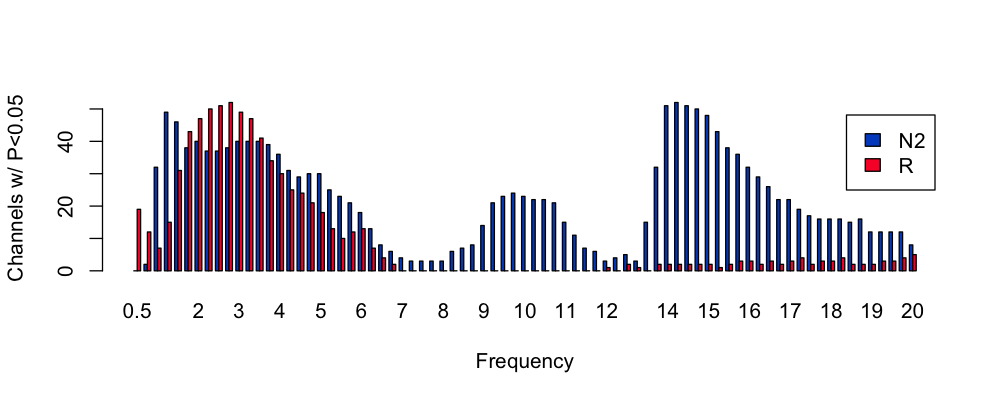
To generate a similar plot as a function of channel, we'll first load the helper file previously used to help ordering channels by the antero-posterior axis:
clocs <- read.table( "work/data/aux/clocs" ,header=T , stringsAsFactors=F )
s$CH <- toupper( s$CH )
s <- merge( s , clocs[ , c("CH","N" ) ] , by="CH" )
chs <- unique( s$CH[ order( s$N ) ] )
barplot( table( s$stg , s$N ) , beside=T , legend = T ,
xlab = "Frequency" , ylab = "Channels w/ P<0.05" ,
col = lstgcols( c( "N2", "R" ) ) , names.arg = chs ,
las=2 , cex.names = 0.5 , args.legend = list(x = "topleft") )
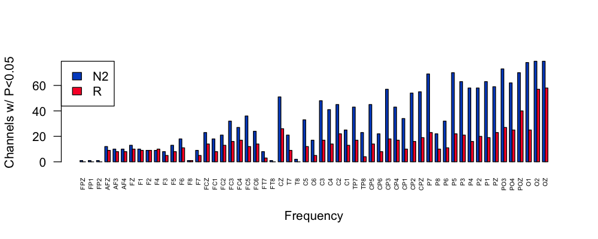
Repeating these plots but only for metrics with P < 0.001 instead of P < 0.05:
s <- h[ h$GRP == "spec" & h$P < 0.001 , ]
By frequency:
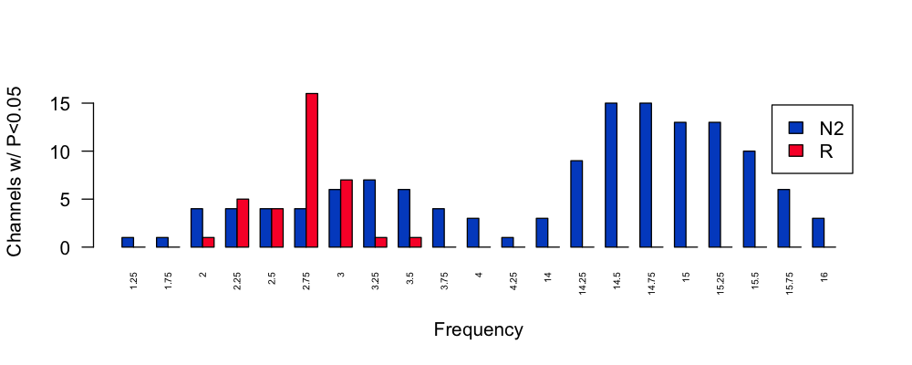
By channel:
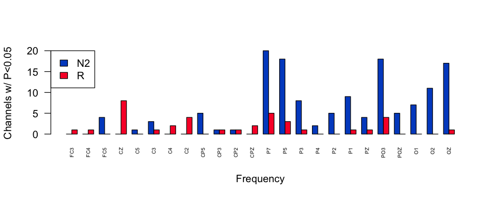
Spindle/SO results
s <- d[ d$GRP == "spso" , ]
vars <- unique( s$BASE )
s$LP <- -log10( s$P )
vars <- c("DENS","AMP","DUR","NOSC","FRQ","CHIRP")
par(mfcol=c(2,6), mar=c(0,0,1,0) )
for (v in vars )
for (f in c(11,15) )
ltopo.rb( s$CH , s$T , f = s$BASE == v & s$F == f ,
th = 1.33 , sz=2,
th.z = s$LP , mt = v )
Results for spindle metrics, with slow spindles on the top row, fast spindles on the bottom row:
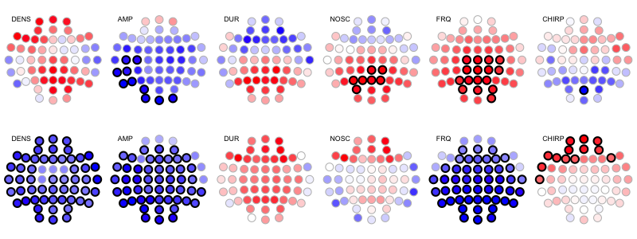
Here are the results for SO (not stratified by spindle frequency, 8 different metrics across the two rows):
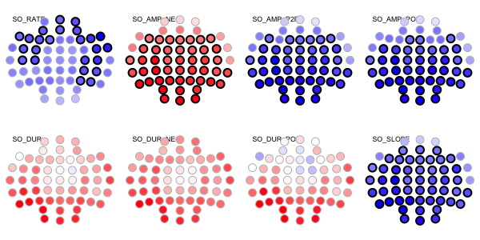
The results for spindle/SO coupling metrics (again, top row slow spindles, bottom row fast spindles):
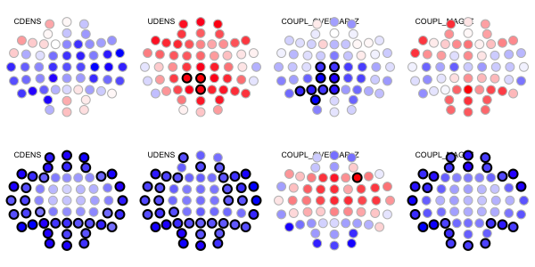
Predicted age difference
We've previously reviewed the sex differences in predicted age difference metric. In brief, it shows a nominally significant difference, with males being "older" than females (beta = 1.04 SD units). The empirical P = 0.02 but after adjustment (for all tests) it is 0.99.
h[ h$GRP == "pad" , 1:7 ]
Y B BASE GROUP P PADJ GRP
DIFF 1.046694 DIFF pad 0.02039796 0.9993001 pad
Extracting the group means for males and females from the binary file:
luna --gpa --options dat=gpa/b.dat stats \
lvars=DIFF inc-ids=@{work/data/aux/male.ids}
GPA VAR/DIFF MEAN 2.13392
GPA VAR/DIFF SD 7.9522
GPA VAR/DIFF NOBS 10
luna --gpa --options dat=gpa/b.dat stats \
lvars=DIFF inc-ids=@{work/data/aux/female.ids}
GPA VAR/DIFF MEAN -6.12825
GPA VAR/DIFF SD 6.12559
GPA VAR/DIFF NOBS 10
That is, whereas males are 2.1 years "older" than expected, on average (albeit wide standard deviation), females are, on average, 6.1 years "younger".
Age effects
Finally, instead of testing for sex differences conditional on age, we will test for age differences, controlling for sex. This is obviously the same set of joint models being tested, but the recorded statistics differ.
luna --gpa -o out/gpa-age.db \
--options dat=gpa/b.dat X=age Z=male nreps=10000 knn=3
Perhaps unsurprisingly given the age range of this small sample (i.e. mean of 36, interquartile range between 32 and 31), we don't see any experiment-wide significant results (and no broad inflation of nominally significant results, as we did for sex):
2517 (prop = 0.059474) significant at nominal p < 0.05
0 (prop = 0) significant at adjusted p < 0.05
Given many sleep metrics show marked but opposite effects during childhood versus late adulthood, this particular age group represents a plateau of the U-shaped trajectories in many instances; that combined with the restriction of range in age, and the small sample, means that age is not a significant contributor to individual differences in this sample.
N2-REM connectivity
Finally, we'll use the same framework to repeat our prior tests of
(intra-individual) differences between N2 and REM sleep in
connectivity (PSI). To do this, we'll need to structure our inputs
slightly differently: we'll now have two observations (rows) per
person: one for N2, one for REM, and we'll create a predictor variable
for sleep stage. (GPA doesn't formally provide a repeated-measures
/ within-person here, so we'll ignore that nuance for now; in this
particular context, with matching implicit between groups, it should
not matter in any case.)
We need to reformat the inputs, such that we now are compared 20 versus 20 observations effectively:
We'll add an n2_ prefix to the ID field:
awk ' NR == 1 { print $0 } \
NR != 1 { print "n2_"$0 } ' OFS="\t" res/psi2.n2 > res/psi2.n2rem
We'll then concatenate the REM PSI values, with a different prefix (and can skip the header here):
awk ' NR != 1 { print "r_"$0 } ' OFS="\t" res/psi2.rem >> res/psi2.n2rem
The new file res/psi2.n2rem looks like (some fields dropped for clarity):
head res/psi2.n2rem
ID CH1 CH2 F PSI
n2_F01 AF3 AF4 3 -0.416104452
n2_F01 AF3 AFZ 3 -1.556914571
n2_F01 AF3 C1 3 3.2736573028
n2_F01 AF3 C2 3 2.5413874046
n2_F01 AF3 C3 3 1.8444029309
...
Then we'll make a new "phenotype" file in the same way, with an
indicator variable (N2) to track with metric is associated with N2
versus REM:
awk ' NR == 1 { print $0,"N2" } \
NR != 1 { print "n2_"$0,"1" } ' OFS="\t" work/data/aux/master.txt > res/demo-nr-rem.txt
awk ' NR != 1 { print "r_"$0,"0" } ' OFS="\t" work/data/aux/master.txt >> res/demo-nr-rem.txt
This file now has 40 "observations":
cat res/demo-nr-rem.txt
ID male age N2
n2_F01 0 41 1
n2_F02 0 32 1
n2_F03 0 37 1
n2_F04 0 32 1
...
r_F01 0 41 0
r_F02 0 32 0
r_F03 0 37 0
r_F04 0 32 0
...
r_M06 1 27 0
r_M07 1 45 0
r_M08 1 40 0
r_M09 1 40 0
r_M10 1 41 0
We'll use the quick inputs method here for GPA to make the binary file gpa/b.psi:
dvs="res/psi2.n2rem|psi|CH1|CH2|F"
ivs="res/demo-nr-rem.txt|demo"
echo " inputs=${dvs},${ivs}
vars=PSI,age,male,N2
dat=gpa/b.psi " | luna --gpa-prep > gpa/manifest.psi
preparing inputs...
++ res/demo-nr-rem.txt: read 40 indivs, 3 base vars --> 3 expanded vars
++ res/psi2.n2rem: read 40 indivs, 1 base vars --> 14364 expanded vars
checking for too much missing data ('retain-cols' to skip; 'verbose' to list dropped vars)
requiring at least n-req=5 non-missing obs (as a proportion, at least n-prop=0.05 non-missing obs)
no vars dropped based on missing-value requirements
writing binary data (40 obs, 14367 variables) to gpa/b.psi
...done
With this done, we can run the GPA model (including both age and
male as covariates, although this should not matter as the two
groups will be implicitly matched):
luna --gpa -o out/gpa-psi.db \
--options dat=gpa/b.psi X=N2 Z=male,age nreps=10000
We now see a large proportion (10% of all metrics) are significant, correcting for the 14,367 tests performed:
14364 total tests specified
adjusting for multiple tests only within each X variable
performing association tests w/ 10000 permutations... (may take a while)
5604 (prop = 0.390142) significant at nominal p < 0.05
1467 (prop = 0.10213) significant at adjusted p < 0.05
We can take a quick look in R:
library(luna)
d <- ldb( "out/gpa-psi.db" )$GPA$X_Y
head(d)
As before, we'll merge in the manifest information:
d <- merge( d , read.table( "gpa/manifest.psi", header=T, stringsAsFactors=F ) , by.x="Y" , by.y="VAR" )
We'll use the same arconn.R function:
source("http://zzz.bwh.harvard.edu/dist/luna/arconn.R" )
zlim = c(-12,12)
par(mfrow=c(1,9),mar=c(0,0,1,0))
for (f in seq(3,19,2)) {
arconn(d$CH1, d$CH2, d$T, flt = d$F==f & d$PADJ < 0.05 , dst=1,
directional=T,
cex=1,title=paste("N2 vs REM,",f-2,"-",f+2,"Hz",sep=""),
lwd1=0.1, lwd2=1, zr=zlim)
}
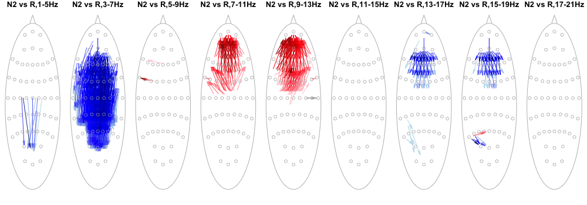
The plot shows only the links that are significant after adjustment in this analysis; the edges are always oriented to show the (directed) PSI that is numerically greater in N2 compared to REM (remember, as before, that could mean less overall connectivity -- see the prior page for notes on how to plot group-differences in pairwise directed connectivity - for this purpose, we just want to show the broad pattern of where the changes are, and so we won't bother with those additional plots here). The color here shows whether the arrow is pointing up or down with respect to topography.
Summary
We seen two related methods for testing for association with linear models. Both methods are designed to take large numbers of metrics as are typically output by Luna and provide a permutation-based to assess multiple testing in these contexts. As always, many issues of study design and analysis come into play when applying these (or any) methods to real data. While we seem to observe clear evidence for sex differences in the N2 power spectra (in a focused analysis of that), the broader analysis including tens of thousands of connectivity metrics is not quite a clear: for this, replication and/or extension in larger samples will be key (and we'll address this in future steps).
We also saw that larger effects (i.e. within person N2 versus REM differences in PSI, versus between-individual sex differences) can in fact withstand the burden of multiple testing, reinforcing the important point that it is not simply the sample size, the number of tests and their correlational structure that matter, but the anticipated effect sizes too.
In the next section we'll consider peri-event statistics.